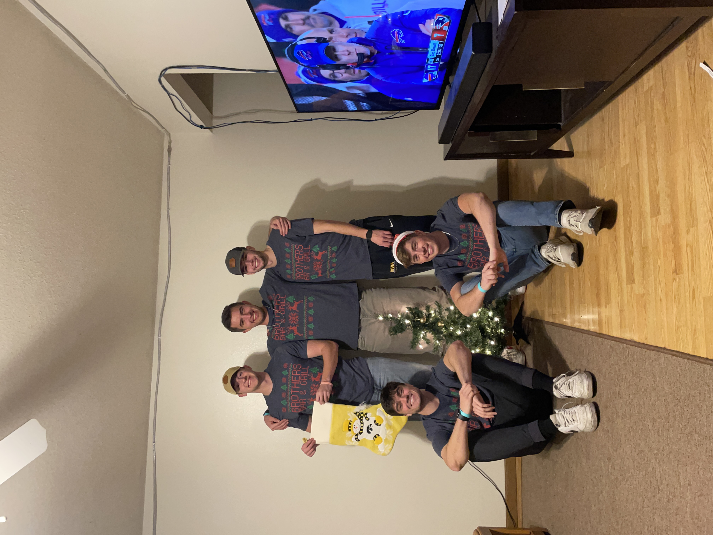

Hello! This page is still In-progress! Once its complete it will house all kinds of the projects I completed during my time at Iowa, as well as some of the projects i've done in my free time. Feel free to check it out!

Current Program languagees.
- SQL
- Python
- C#
| Project | Description | Status |
|---|---|---|
| Find 211 Website build | Building a website for Find211 which shows where people can get social assistance in their local communites nationwide. | In-progress |
| Portfolio Webiste | Look at this page, it's not done. | In-Progress |
| App for BPA | Created a powerapp that would allow users to log in events, which would be tracked via sharepoint list. | Completed |